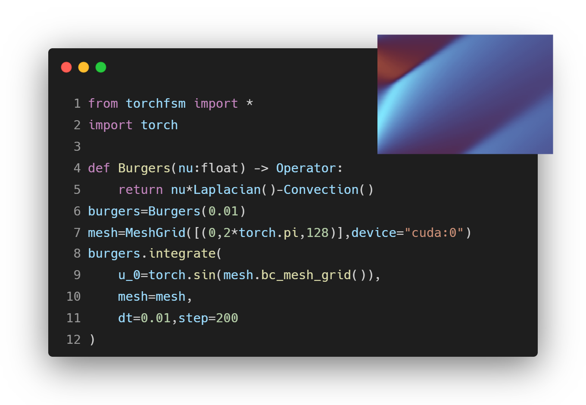

TorchFSM
Fourier Spectral Method
with PyTorch
Modular by design
TorchFSM offers a modular architecture with essential mathematical operators—like divergence, gradient, and convection—so you can build custom solvers like stacking building blocks, quickly and intuitively.
GPU-accelerated
TorchFSM leverages GPU computing to speed up simulations dramatically. Run complex 3D PDEs in minutes, not hours, with seamless hardware acceleration.
Batched simulation support
Built on PyTorch, TorchFSM enables batched simulations with varied initial conditions—ideal for parameter sweeps, uncertainty quantification, or ensemble analysis.
Differentiable and ML-ready
Fully differentiable by design, TorchFSM integrates naturally with machine learning workflows—for residual operators, differentiable physics, or dataset generation.